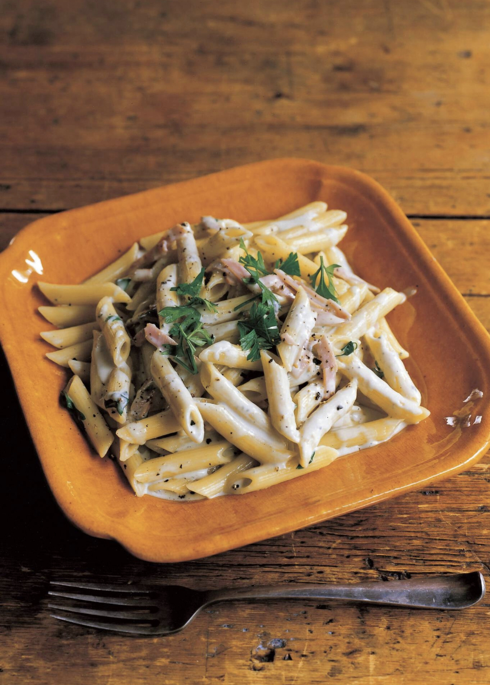

Description
This dish was first introduced in volume 53, chapter 522 of the manga during Luffy's last night on the island of Amazon Lilly. Amazon Lilly is an especially dangerous island for two reasons. It is located inside of the calm belt, which does not experience any wind (definitely not the best place to sail a pirate ship), and its surroundings are nesting grounds for enormous aquatic neptunians, hence the name of this dish.
Ingredients
- 6 1/2 oz. (180 g) penne
- 2 slices of ham
- 1/3-1/2 cup (100 mL) milk
- A little under 1/2 cup (100 mL) of heavy cream
- 1/3 cup (50 g) blue cheese
- Vegetable Oil
- 2-3 tbsp. grated parmesan cheese
- A pinch of black pepper
- Flat-leaf parsley
- 6-7 cups (1500 mL) of water
- 1 tbsp. salt
Steps
- Boil about 6-7 cups of water, add 1 tbsp. of salt, and boil penne for one minute less than indicated on packaging. Slice ham into 1/4 inch pieces
- Starting with 1/3 cup milk and adding more as needed, heat milk and cream in a pan on medium heat for about 2 minutes before penne is cooked. Mix in crumbled blue cheese. When it is half melted, add penne and ham and simmer for 1 minute or until sauce has thickened. Add parmesan and mix.
- Lastly, add pepper to taste, and sprinkle chopped parsley on top.